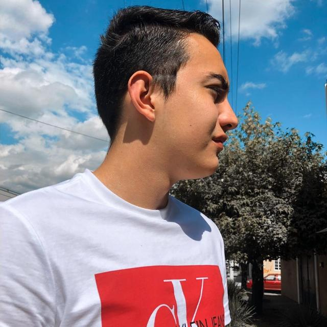
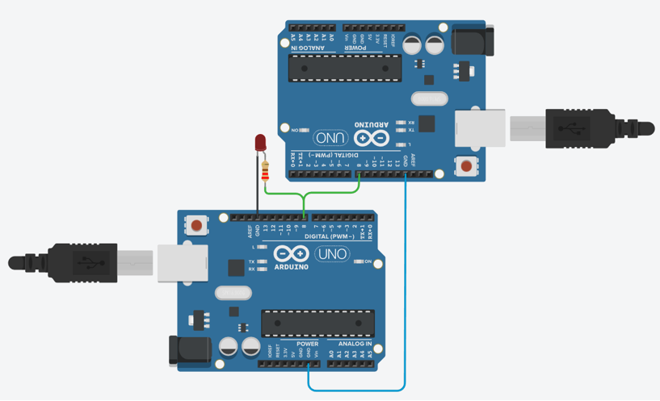
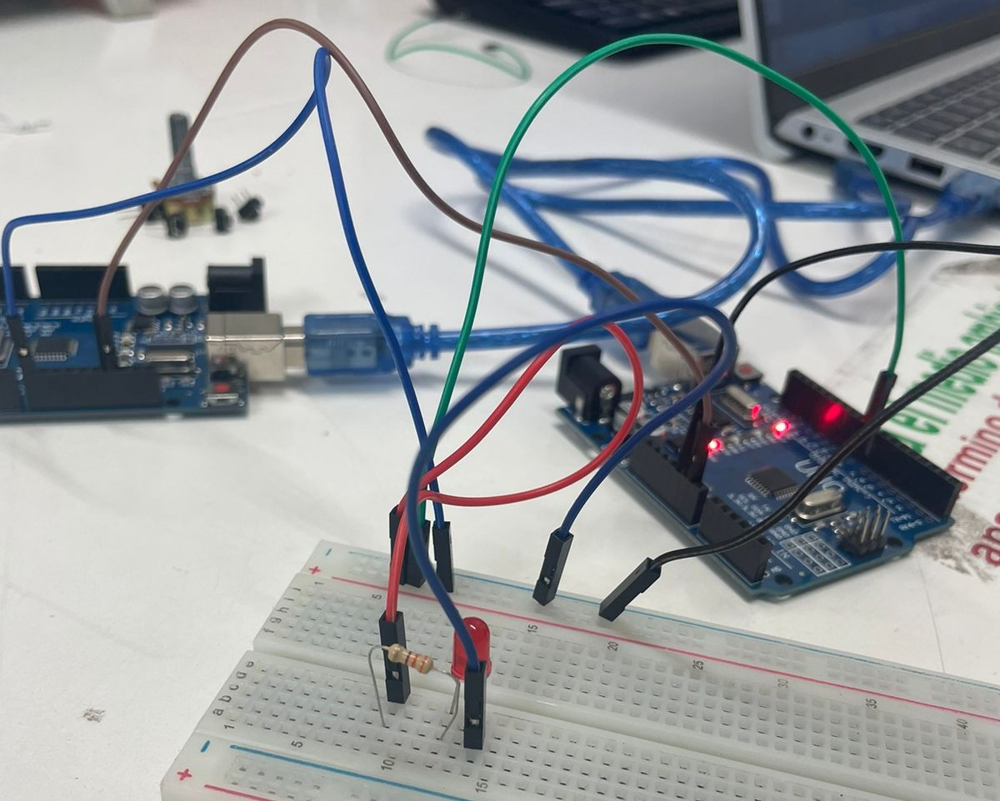

Protocolo de Comunicación – Contador de pulsos y contador de tiempo

César Borja Ruiz
Ing. Mecatrónica
Didier Cabrera Lopez
Ing. Electronica y Cominicaciones
Luis Felipe Mendieta Campos
Ing. Mecatrónica
Fecha: 22/01/2024
- Resumen -
Los protocolos de comunicación de son fundamentales en cualquier implementación de
sistemas inteligentes ya que transmitir datos de un lugar a otro de forma eficiente y rapida es crucial
para el funcionamiento de todo tipo de sistemas, programas o aplicaciones de ingenieria
En la presenta practica se abordaron diferentes formas de transmitir datos entre
dispositivos y su reconstruccion.
- Introducción -
Los protocolos de comunicación son la columna vertebral de la conectividad en el mundo
digital moderno. Estos conjuntos de reglas y convenciones establecen cómo los dispositivos y sistemas
intercambian datos y se comunican entre sí. Su importancia radica en su capacidad para garantizar la
interoperabilidad, la fiabilidad y la seguridad en una amplia gama de contextos, desde la comunicación
entre computadoras hasta la automatización industrial y los servicios en línea.
- Materiales -
2 Arduino 1
Jumpers macho-macho
Cables USB tipo B
Led
Protoboard
- Desarrollo -
Basandonos en los circuitos presentados en la imagen siguiente, se procedio a realizar
el armado fisico de los circuitos con material antes mencionado.
Objetivo General
Conocer, identificar y comprobar el funcionamiento al desarrollar un protocolo de comunicación, en esta primera parte de un contador de pulsos y un contador de tiempo en un pulso.

Contador de pulsos
Utilizando 1 Arduino, diseñar una función que permita enviar un número determinado de pulsos
(Variación de 0 a 1) a una frecuencia específica, la función debe tener la siguiente
estructura void pulsos(int cantidad, int duración). (Comprobar el correcto funcionamiento
utilizando el osciloscopio).
Utilizando un segundo Arduino, diseñar una función que permita contar el número de pulsos
que ha recibido (Variación de 0 a 1) y mostrarlos en el monitor serial.
Utilizando ambos arduinos, conectar un pin de los Arduinos para comprobar el funcionamiento
del sistema enviando un numero de pulsos específicos a la velocidad de 1 pulso por
segundo,10, 100 y 1000 pulsos por segundo.
Contador de duración de pulsos
Utilizando 1 Arduino, diseñar una función que permita enviar un pulso con un tiempo en High determinado (Comprobar el correcto funcionamiento utilizando el osciloscopio).
Utilizando un segundo Arduino, diseñar una función que permita contar el tiempo de la duración de un pulso que ha recibido del primer Arduino (Variación de 0 a 1) y mostrarlos en el monitor serial.
- Resultados -

Circuito construido, en los siguientes videos se muestra en el primero el envio de X numero de pulsos a una frecuencia f,
y el conteo del numero de pulsos recibidos, ademas de la variacion de la velocidad de envio para comprobar el limite del dispositivo.
El segundo video muestra el envio de una señal en alto del primer arduino y el segundo contando el tiempo que esa señal duro en alto.
- Conclusiones -
Las practicas realizadas sirvieron para familiarizarse con los conceptos involucrados en comunicaciones y envio de datos, donde es fundamental tener en cuenta conceptos como la velocidad de envio, de recepcion y sincronizacion para que el envio de los datos sea efectiva.
- Referencias -
- M. Reyes, Comunicaciones digitales, 1.ª ed. Universidad Autónoma Metropolitana, 2017. [En línea]. Disponible en: https://casadelibrosabiertos.uam.mx/gpd-comunicaciones-digitales.html